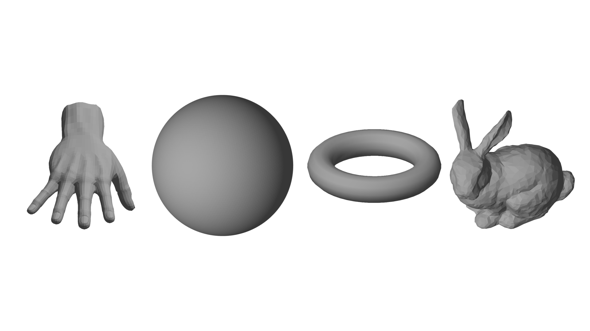
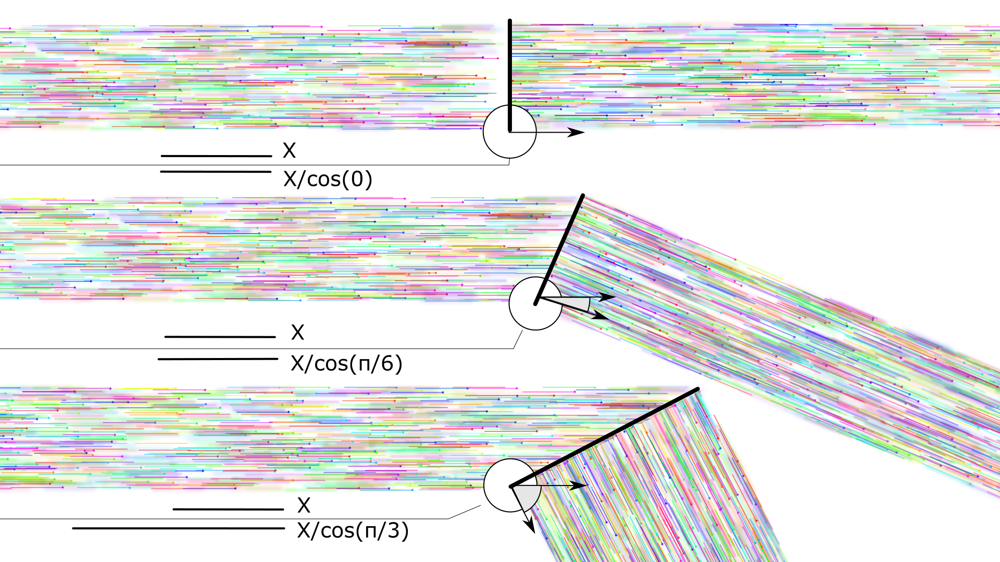
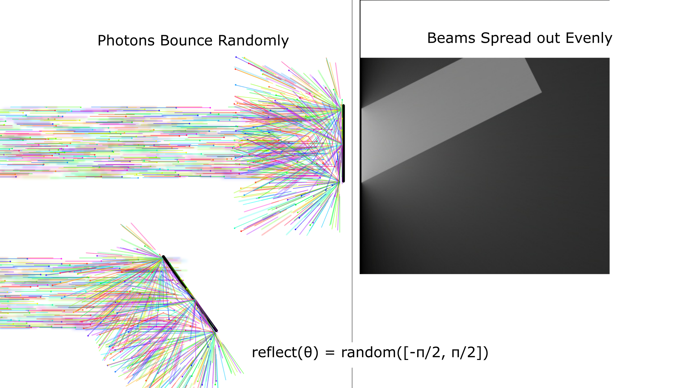
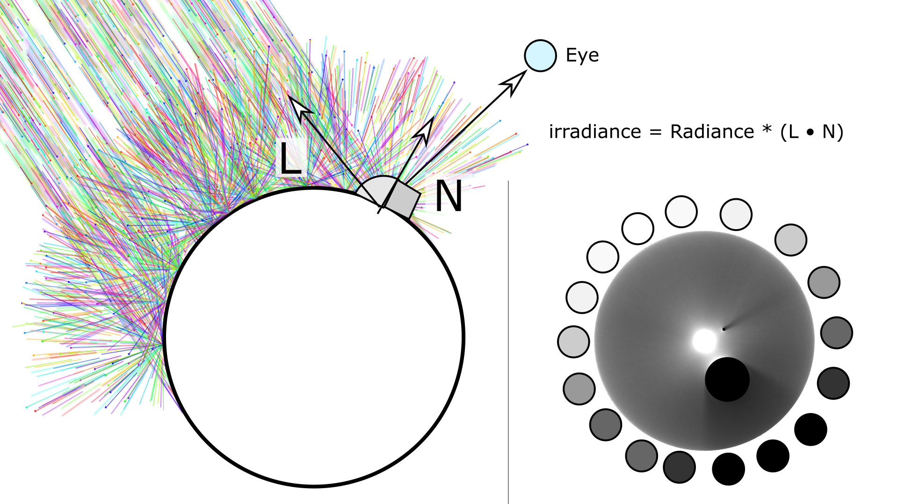

| Name
| Image
| Narrative
|
| Lambertian Reflectance |
 |
From a subjective viewpoint, lambertian reflectance looks like the way light illuminates these 3D models,
where they gradually get darker as the surface turns away from the light. |
| 1. Emmission of white light. |

|
A light source somewhere emits a beam of light consisting of a spectrum of photons, each with a particular wavelength. In this image, the photons are uniformly distributed and therefore form a beam of white light. |
| Projection |

|
At the microscale, we can think of smooth objects as flat planes. When portions of the beam hit these flat planes, the total power of the beam will be distributed over a larger width than the beam depending on the angle between the surface normal and the direction the beam is coming from. This will vary the irradiant energy at every point on the surface based on the surface normal. |
| Diffuse Reflection |

|
A diffuse surface scatters any irradiant light uniformly in all directions. A photon coming in has an equal probability of being reradiated in any direction on the hemisphere centered on the surface normal. Because the scattering is uniform, our eyes will receive the same radiance from any given point on the surface, invariant of where we place our eye as long as our eye or body geometry doesn't obscure any of the irradiant energy coming into the surface. |
| Scaled Irradiance |

|
Constant stream of light + projection + diffuse reflection = irradiance scaled by the projection, invariant of viewpoint. |
| What our Eyes See |
|
So, our eyes see surfaces, shaded ligheter in portions that point towards the light and darker in portions that point away fomr the light. |
Interview
I have be interview, and my transcription is forthcoming.
Thank you for your interest.